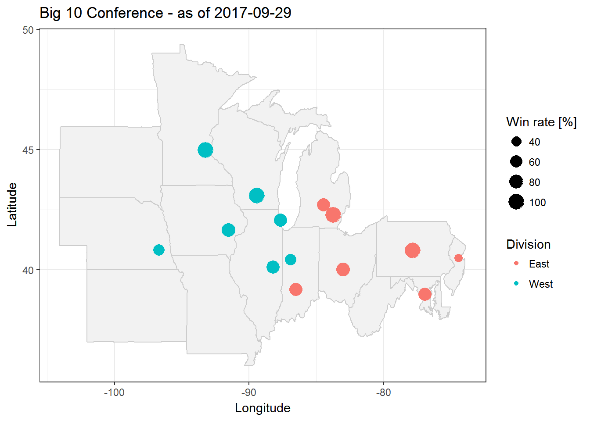
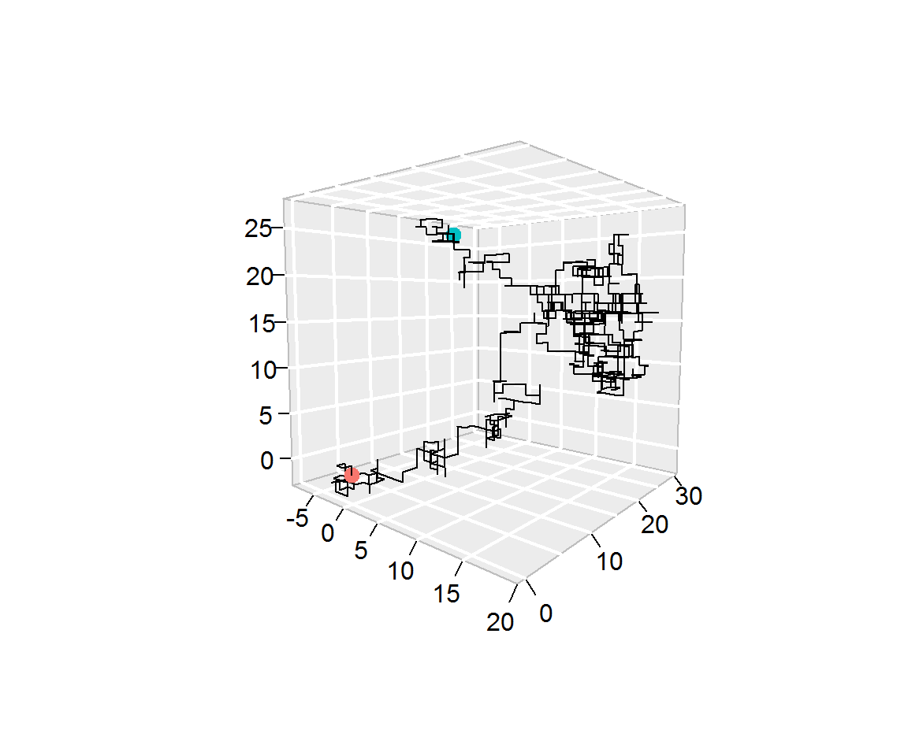
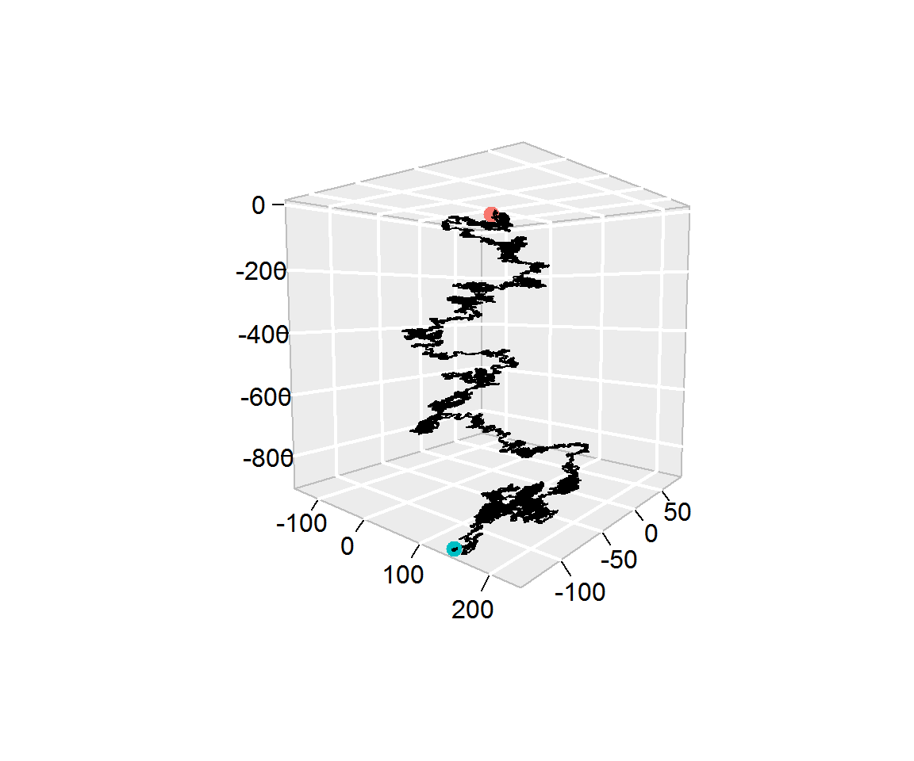
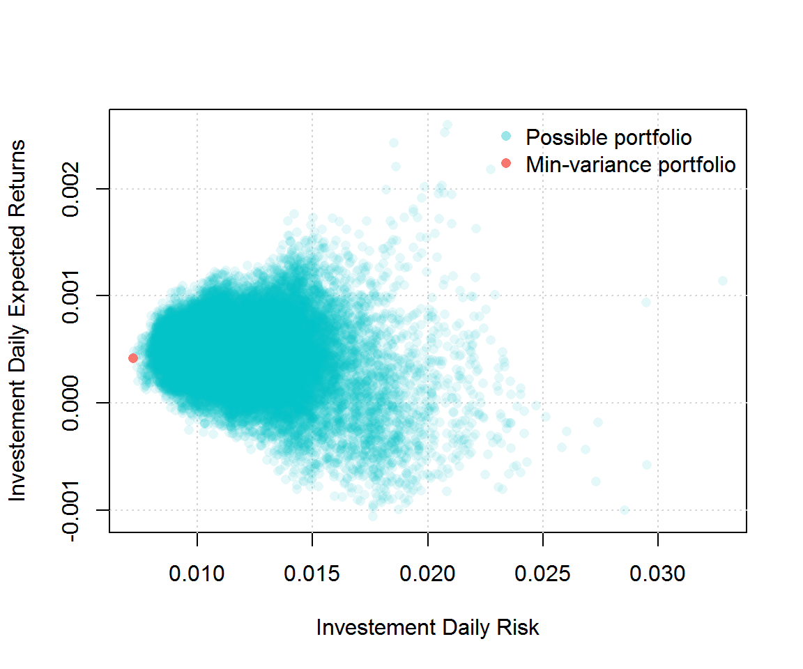

Important: To submit your homework share your GitHub repository with stephaneguerrier and munsheet by the deadline (i.e. 09/14/17 at 4PM). Do not modify your homework after the deadline. We will grade the most recent (~ 4PM) portion of your RMarkdown file.
The objectives of this homework assignment are the following
To start, create a (perferably private) GitHub repository for your group, and name it stat297hw1. Once again, make sure to add munsheet and stephaneguerrier as collaborators. This project must be done using GitHub and respect the following requirements:
commit at least once.clear and meaningful.issue containing some form of TO DO list.In your repository create a file called providing an HTML output with the theme cerulean and syntax highlighting tango. This file should contain the following elements:
Sys.time())A section called “Introduction” where you provide a short summary of the structure of your homework. Moreover, record a short video to introduce your group and include it in your R Markdown document.
A section called “Group Members”. This sections should have one sub-section for each group member in your team. For example, a group with three members should have three biographies in total. Each of these sub-sections (named after each group member) should include small biographies containing at least the following elements:
A section called “R Markdown Syntax”, where you will demonstrate your R Markdown skills! In this section make sure to:
cache = T leads to a misleading answer. This example must be different from the one presented in the textbook.rnorm(). Store these 100 values in a vector called x. Then, compute the empirical median, mean and variance of x. Are these results different from 0, 0 and 1 (their respective theoretical values)? Is this result surprising? Justify your answer.x (make sure to include a caption to this figure), this can be done in R using the function hist().Include the equation below: \[ \begin{aligned} \mathbb{E} \left[ \text{var} \left\{ \boldsymbol{v}_1\left( \hat{\boldsymbol{\theta}},n\right) \big| \hat{\boldsymbol{\theta}} \right\} \right] &= \text{var} \left\{ \mathbf{v}_1\left( \boldsymbol{\theta}_0,n\right) \right\} + \mathbb{E} \left[\mathcal{O}_p\left\{ {\bf D}_1(\boldsymbol{\theta}^*,n)(\hat{\boldsymbol{\theta}} - \boldsymbol{\theta}_{0}), \dots, {\bf D}_p(\boldsymbol{\theta}^*,n)(\boldsymbol{\theta} - \boldsymbol{\theta}_{0}) \right\}\right]\\ &= \text{var} \left\{ \mathbf{v}_1\left( \boldsymbol{\theta}_0,n\right) \right\} + \mathcal{O}\left(n^{-2}\right). \end{aligned} \]
Some additional info… :)
Include a “color box” such as the one below:
Some important Info: something
A “References” section that contains all the references used in your document.
Important: To submit your homework share your GitHub repository with stephaneguerrier and munsheet by the deadline, 4PM 10/13/2017. Do not modify your homework after the deadline. We will grade the version of your RMarkdown file that’s closest to 4PM 10/13/2017.
The objectives of this homework assignment are the following:
To start, create a (perferably private) GitHub repository for your group, and name it stat297hw2. Be sure to add munsheet and stephaneguerrier as collaborators.
This project must be done using GitHub and respect the following requirements:
commit at least once.clear and meaningful.issue containing some form of a TO DO list.Write a program that prints the numbers from 1 to 1000. But for multiples of three print “Fizz” instead of the number and for the multiples of five print “Buzz”. For numbers which are multiples of both three and five print “FizzBuzz”.
An example output would be:
1, 2, Fizz, 4, Buzz, Fizz, 7, 8, Fizz, Buzz, 11, Fizz, 13, 14, Fizz Buzz, 16, 17, Fizz, 19, Buzz, Fizz, 22, 23, Fizz, Buzz, 26, Fizz, 28, 29, Fizz Buzz, 31, 32, Fizz, 34, Buzz, Fizz, ...Using the same tools we used in class, create a simple map to represent current standing in the Big Ten football conference. More specifically, the goal of this problem is to reproduce as closely as possible the map below:

Note that the code below was used to download the data needed for this graph:
library(maps)
library(ggmap)
library(rvest)
# Define webpage
big10 = read_html("http://www.bigten.org/library/stats/fb-confsked.html#standings")
# Get uni names
big10 %>%
html_nodes(".b1gfbstats:nth-child(9) td:nth-child(1) , .b1gfbstats:nth-child(6) td:nth-child(1)") %>%
html_text() -> uni_name
uni_name = paste(uni_name,"University")
# Find uni locations
uni_coord = data.frame(geocode(uni_name))
# Get win rate
big10 %>%
html_nodes("td:nth-child(7)") %>%
html_text() -> uni_wp
uni_coord$wp = 100*as.numeric(uni_wp[1:length(uni_name)])
# Get division
uni_coord$conf = rep(c("East Division","West Division"), each = length(uni_name)/2)In this problem you will program a three-dimensional random walk. For this purpose we will consider a three-dimensional space where we let \(\mathbf{X}_0 = [0 \;\; 0\;\; 0]^T\) denote the starting point of our process. Suppose that there exist a sequence of random variables \(U_1, \cdots, U_B\) such \(U_t \stackrel{iid}{\sim} \mathcal{U}(0,1)\). Then, we let the position at time \(t\) (where \(1 \leq t \leq B\)) be given by
\[ \mathbf{X}_t = \mathbf{X}_{t - 1} + \mathbf{f}(U_t), \]
where
\[ \mathbf{f}(U_t) = \left\{ \begin{array}{ll} [\phantom{-}1 \; \,\;\phantom{-}0 \; \,\;\phantom{-}0]^T & \mbox{if } U_t \leq a_1 \\ [ -1 \; \,\;\phantom{-}0 \; \,\;\phantom{-}0]^T & \mbox{if } U_t \in (a_1, \, a_2] \\ [\phantom{-}0 \; \,\;\phantom{-}1 \; \,\;\phantom{-}0]^T & \mbox{if } U_t \in (a_2, \, a_3] \\ [\phantom{-}0 \; -1 \; \,\;\phantom{-}0]^T & \mbox{if } U_t \in (a_3, \, a_4] \\ [\phantom{-}0 \; \,\;\phantom{-}0 \; \,\;\phantom{-}1]^T & \mbox{if } U_t \in (a_4, \, a_5] \\ [\phantom{-}0 \; \,\;\phantom{-}0 \; -1]^T & \mbox{if } U_t > a_5. \\ \end{array} \right. \]
So for example, if we consider \(B = 2\), \(a_i = \frac{i}{6}\), \(U_1 = 0.12\) and \(U_2 = 0.81\) then we have
\[\mathbf{X}_1 = \mathbf{X}_0 + \mathbf{f}(U_t = 0.12) = \left[ \begin{matrix} 0\\ 0\\ 0\\ \end{matrix}\right] + \left[ \begin{matrix} -1\\ \phantom{-}0\\ \phantom{-}0\\ \end{matrix}\right] = \left[ \begin{matrix} -1\\ \phantom{-}0\\ \phantom{-}0\\ \end{matrix}\right]. \]
and
\[\mathbf{X}_2 = \mathbf{X}_1 + \mathbf{f}(U_t = 0.81) = \left[ \begin{matrix} -1\\ \phantom{-}0\\ \phantom{-}0\\ \end{matrix}\right] + \left[ \begin{matrix} 0\\ 0\\ 1\\ \end{matrix}\right] = \left[ \begin{matrix} -1\\ \phantom{-}0\\ \phantom{-}1\\ \end{matrix}\right]. \]
B <- 10^4
set.seed(1982)
Ut <- runif(B)
head(Ut)## [1] 0.7533571 0.6056869 0.4977858 0.6473441 0.2183902 0.4594699Therefore, \(U_t\) corresponds to the t-th element Ut. Using the characteristics, show that
\[ X_B = \left[\begin{matrix} -6\\ \phantom{-}22\\ \phantom{-}26\\ \end{matrix}\right], \]
and provide a graphical respresentation of your random walk. For example, you can produce a graph similar to the one below which is based on the function segments3D from the plot3D package. Note that the red and blue points indicate, respectively the starting and end points of the random walk.

B <- 10^5
set.seed(2000)
Ut <- runif(B)
head(Ut)## [1] 0.1965959 0.7164260 0.3620857 0.3910775 0.8133072 0.4279599You should obtain
\[ X_B = \left[\begin{matrix} \phantom{-}142\\ -133\\ -899\\ \end{matrix}\right], \]
and produce a graph similar to:

\[\mathbb{E} \left[ X_B \right] = \left[\begin{matrix} 0\\ 0\\ -0.01 B\\ \end{matrix}\right]. \]
Does this result make sense given the end of the process simulated in part (b)
Suppose that you are working in an investment firm company as a quantitative analyst. Your boss gives you the task of creating a portfolio for one of your clients. The client wants to find the portfolio with the smallest variance that satisfies the following constraints:
Your execution fees (i.e. the cost of buying shares) are given by \(C_i = \max \left(\$40, \$ 0.0001 \cdot X_i \right)\) for each transaction where \(X_i\) represent the amount of money you wish to invest in stock \(i\). For example, if you want to invest 30% and 70% in stocks A and B your total cost would be
\[ \text{Cost} = C_1 + C_2 = \max \left(\$40, \$ 0.0001 \cdot 0.3 \cdot 10^6 \right) + \max \left(\$40, \$ 0.0001 \cdot 0.7 \cdot 10^6 \right) = \max(\$40, \$30) + \max(\$40, \$70) = \$40 + \$70 = \$110. \]
Note that \(\sum_i X_i = \$1,000,000\). Therefore, your boss want you to compute all possible portfolios that satify the client’s constraints, represent them graphically as (for example) in the graph below and find the weight of the best (i.e. minimum variance) portfolio. The list of all current S&P 500 stock’s tickers is by
## [1] "ABT" "ABBV" "ACN" "ATVI" "AYI" "ADBE" "AMD" "AAP"
## [9] "AES" "AET" "AMG" "AFL" "A" "APD" "AKAM" "ALK"
## [17] "ALB" "ARE" "ALXN" "ALGN" "ALLE" "AGN" "ADS" "LNT"
## [25] "ALL" "GOOGL" "GOOG" "MO" "AMZN" "AEE" "AAL" "AEP"
## [33] "AXP" "AIG" "AMT" "AWK" "AMP" "ABC" "AME" "AMGN"
## [41] "APH" "APC" "ADI" "ANDV" "ANSS" "ANTM" "AON" "AOS"
## [49] "APA" "AIV" "AAPL" "AMAT" "ADM" "ARNC" "AJG" "AIZ"
## [57] "T" "ADSK" "ADP" "AZO" "AVB" "AVY" "BHGE" "BLL"
## [65] "BAC" "BK" "BCR" "BAX" "BBT" "BDX" "BRK-B" "BBY"
## [73] "BIIB" "BLK" "HRB" "BA" "BWA" "BXP" "BSX" "BHF"
## [81] "BMY" "AVGO" "BF-B" "CHRW" "CA" "COG" "CDNS" "CPB"
## [89] "COF" "CAH" "CBOE" "KMX" "CCL" "CAT" "CBG" "CBS"
## [97] "CELG" "CNC" "CNP" "CTL" "CERN" "CF" "SCHW" "CHTR"
## [105] "CHK" "CVX" "CMG" "CB" "CHD" "CI" "XEC" "CINF"
## [113] "CTAS" "CSCO" "C" "CFG" "CTXS" "CLX" "CME" "CMS"
## [121] "COH" "KO" "CTSH" "CL" "CMCSA" "CMA" "CAG" "CXO"
## [129] "COP" "ED" "STZ" "COO" "GLW" "COST" "COTY" "CCI"
## [137] "CSRA" "CSX" "CMI" "CVS" "DHI" "DHR" "DRI" "DVA"
## [145] "DE" "DLPH" "DAL" "XRAY" "DVN" "DLR" "DFS" "DISCA"
## [153] "DISCK" "DISH" "DG" "DLTR" "D" "DOV" "DWDP" "DPS"
## [161] "DTE" "DRE" "DUK" "DXC" "ETFC" "EMN" "ETN" "EBAY"
## [169] "ECL" "EIX" "EW" "EA" "EMR" "ETR" "EVHC" "EOG"
## [177] "EQT" "EFX" "EQIX" "EQR" "ESS" "EL" "ES" "RE"
## [185] "EXC" "EXPE" "EXPD" "ESRX" "EXR" "XOM" "FFIV" "FB"
## [193] "FAST" "FRT" "FDX" "FIS" "FITB" "FE" "FISV" "FLIR"
## [201] "FLS" "FLR" "FMC" "FL" "F" "FTV" "FBHS" "BEN"
## [209] "FCX" "GPS" "GRMN" "IT" "GD" "GE" "GGP" "GIS"
## [217] "GM" "GPC" "GILD" "GPN" "GS" "GT" "GWW" "HAL"
## [225] "HBI" "HOG" "HRS" "HIG" "HAS" "HCA" "HCP" "HP"
## [233] "HSIC" "HSY" "HES" "HPE" "HLT" "HOLX" "HD" "HON"
## [241] "HRL" "HST" "HPQ" "HUM" "HBAN" "IDXX" "INFO" "ITW"
## [249] "ILMN" "IR" "INTC" "ICE" "IBM" "INCY" "IP" "IPG"
## [257] "IFF" "INTU" "ISRG" "IVZ" "IRM" "JEC" "JBHT" "SJM"
## [265] "JNJ" "JCI" "JPM" "JNPR" "KSU" "K" "KEY" "KMB"
## [273] "KIM" "KMI" "KLAC" "KSS" "KHC" "KR" "LB" "LLL"
## [281] "LH" "LRCX" "LEG" "LEN" "LVLT" "LUK" "LLY" "LNC"
## [289] "LKQ" "LMT" "L" "LOW" "LYB" "MTB" "MAC" "M"
## [297] "MRO" "MPC" "MAR" "MMC" "MLM" "MAS" "MA" "MAT"
## [305] "MKC" "MCD" "MCK" "MDT" "MRK" "MET" "MTD" "MGM"
## [313] "KORS" "MCHP" "MU" "MSFT" "MAA" "MHK" "TAP" "MDLZ"
## [321] "MON" "MNST" "MCO" "MS" "MOS" "MSI" "MYL" "NDAQ"
## [329] "NOV" "NAVI" "NTAP" "NFLX" "NWL" "NFX" "NEM" "NWSA"
## [337] "NWS" "NEE" "NLSN" "NKE" "NI" "NBL" "JWN" "NSC"
## [345] "NTRS" "NOC" "NRG" "NUE" "NVDA" "ORLY" "OXY" "OMC"
## [353] "OKE" "ORCL" "PCAR" "PKG" "PH" "PDCO" "PAYX" "PYPL"
## [361] "PNR" "PBCT" "PEP" "PKI" "PRGO" "PFE" "PCG" "PM"
## [369] "PSX" "PNW" "PXD" "PNC" "RL" "PPG" "PPL" "PX"
## [377] "PCLN" "PFG" "PG" "PGR" "PLD" "PRU" "PEG" "PSA"
## [385] "PHM" "PVH" "QRVO" "PWR" "QCOM" "DGX" "Q" "RRC"
## [393] "RJF" "RTN" "O" "RHT" "REG" "REGN" "RF" "RSG"
## [401] "RMD" "RHI" "ROK" "COL" "ROP" "ROST" "RCL" "CRM"
## [409] "SBAC" "SCG" "SLB" "SNI" "STX" "SEE" "SRE" "SHW"
## [417] "SIG" "SPG" "SWKS" "SLG" "SNA" "SO" "LUV" "SPGI"
## [425] "SWK" "SBUX" "STT" "SRCL" "SYK" "STI" "SYMC" "SYF"
## [433] "SNPS" "SYY" "TROW" "TGT" "TEL" "FTI" "TXN" "TXT"
## [441] "TMO" "TIF" "TWX" "TJX" "TMK" "TSS" "TSCO" "TDG"
## [449] "TRV" "TRIP" "FOXA" "FOX" "TSN" "UDR" "ULTA" "USB"
## [457] "UA" "UAA" "UNP" "UAL" "UNH" "UPS" "URI" "UTX"
## [465] "UHS" "UNM" "VFC" "VLO" "VAR" "VTR" "VRSN" "VRSK"
## [473] "VZ" "VRTX" "VIAB" "V" "VNO" "VMC" "WMT" "WBA"
## [481] "DIS" "WM" "WAT" "WEC" "WFC" "HCN" "WDC" "WU"
## [489] "WRK" "WY" "WHR" "WMB" "WLTW" "WYN" "WYNN" "XEL"
## [497] "XRX" "XLNX" "XL"
To help complete this task your boss tells you to use 3 years of historical data and gives you this code to download the data you will need:
library(quantmod)
library(rvest)
sp500 <- read_html("https://en.wikipedia.org/wiki/List_of_S%26P_500_companies")
sp500 %>%
html_nodes(".text") %>%
html_text() -> ticker_sp500
SP500_symbol <- ticker_sp500[(1:499)*2+1]
SP500_symbol[SP500_symbol == "BRK.B"] <- "BRK-B"
SP500_symbol[SP500_symbol == "BF.B"] <- "BF-B"
today <- Sys.Date()
three_year_ago <- seq(today, length = 2, by = "-3 year")[2]
getSymbols(SP500_symbol, from = three_year_ago, to = today)He also mentioned that the function get() could be useful for this project and provides you with the example below:
library(quantmod)
today <- Sys.Date()
three_year_ago <- seq(today, length = 2, by = "-3 year")[2]
stocks_tickers <- c("AAPL", "MSFT")
getSymbols(stocks_tickers, from = three_year_ago, to = today)## [1] "AAPL" "MSFT"nb_ticker <- length(stocks_tickers)
var_stocks <- rep(NA, nb_ticker)
names(var_stocks) <- stocks_tickers
for (i in 1:nb_ticker){
Xt = na.omit(ClCl(get(stocks_tickers[i])))
stocks_tickers[i] = var(Xt)
}
stocks_tickers## [1] "0.00021177397532055" "0.000205842540485753"